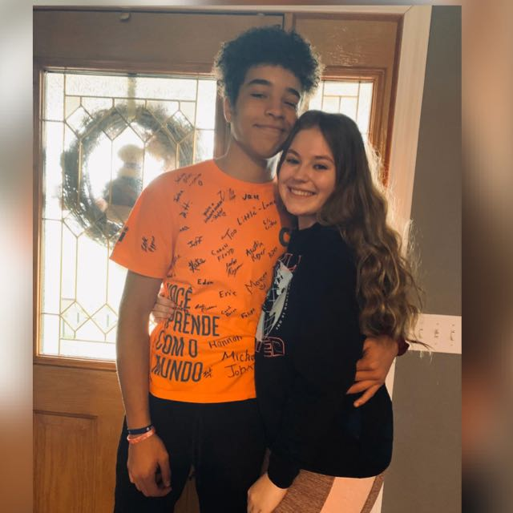

O quarto Automatizado
Nosso projeto visa melhorar a qualidade de vida das pessoas, maximizando o tempo em que elas precisam para fazer simples coisas do cotidiano, como às vezes esquecer de fechar as janelas, estar apressado para ir trabalhar e esquecer de fechar o guarda- roupas, com isso em mente pensamos em automatizar uma das partes mais importantes de uma casa, o quarto, que é o local onde passamos à maior parte do nosso tempo enquanto estamos em casa.
Sobre
Objetivo do projeto:
Nosso projeto consistiu em automatizar alguns objetos de dentro de um quarto, como as janelas, e o guarda-roupa, as janelas caso chova, ela se fecha sozinha e quando fica muito quente ela se abre sozinha, para assim regular a temperatura ambiente, já o guarda-roupas ele funciona com um sensor de movimento quando a pessoa está perto ele abre, se isso não acontece ele se fecha, já o chuveiro criamos de uma maneira auto sustável. A execução do projeto foi divertida e satisfatória, também conseguimos adquirir muito conhecimento sobre à área de IoT, não encontramos erros no projeto final, com isso conseguimos utilizar todo conhecimento que adquirimos.

Guarda-roupas Automatizado

Chuveiro Solar

Janela Automatizada
Participantes
Murillo
Resposavel pelo:
Site de apresentação
Joana
Resposavel pelo:
Código de projeto
Débora
Resposavel pelo:
Código de projeto
FIlipe
Resposavel pelo:
Design de projeto
Cleison
Resposavel pela:
Documentação de projeto
Luis
Resposavel pelo:
Código de projeto
